| Name | Description |
|---|---|
| Test example 1: AsynchronousInductionMachineSquirrelCage direct-on-line | |
| Test example 2: AsynchronousInductionMachineSquirrelCage Y-D | |
| Test example 3: AsynchronousInductionMachineSlipRing | |
| Test example 4: AsynchronousInductionMachineSquirrelCage with inverter | |
| Test example 5: SynchronousInductionMachineReluctanceRotor with inverter | |
| Test example 6: PermanentMagnetSynchronousInductionMachine with inverter | |
| Test example 7: ElectricalExcitedSynchronousInductionMachine as Generator | |
| Test example 8: DC with permanent magnet starting with voltage ramp | |
| Test example 9: DC with electrical ecxitation starting with voltage ramp | |
| Test example 10: DC with serial excitation starting with voltage ramp | |
| Transformer Testbench | |
| 6-pulse rectifier with 1 transformer | |
| 12-pulse rectifier with 2 transformers | |
| AsynchronousInductionMachineSquirrelCage Steinmetz-connection |
 Modelica.Electrical.Machines.Examples.AIMC_DOL
Modelica.Electrical.Machines.Examples.AIMC_DOL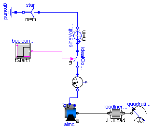
| Type | Name | Default | Description |
|---|---|---|---|
| Voltage | VNominal | 100 | nominal RMS voltage per phase [V] |
| Frequency | fNominal | 50 | nominal frequency [Hz] |
| Time | tStart1 | 0.1 | start time [s] |
| Torque | TLoad | 161.4 | nominal load torque [N.m] |
| AngularVelocity | wLoad | 1440.45*2*Modelica.Constants... | nominal load speed [rad/s] |
| Inertia | JLoad | 0.29 | load's moment of inertia [kg.m2] |
model AIMC_DOL
"Test example 1: AsynchronousInductionMachineSquirrelCage direct-on-line"
extends Modelica.Icons.Example;
constant Integer m=3 "number of phases";
parameter Modelica.SIunits.Voltage VNominal=100
"nominal RMS voltage per phase";
parameter Modelica.SIunits.Frequency fNominal=50 "nominal frequency";
parameter Modelica.SIunits.Time tStart1=0.1 "start time";
parameter Modelica.SIunits.Torque TLoad=161.4 "nominal load torque";
parameter Modelica.SIunits.AngularVelocity wLoad(displayUnit="1/min")=1440.45*2*Modelica.Constants.pi/60
"nominal load speed";
parameter Modelica.SIunits.Inertia JLoad=0.29 "load's moment of inertia";
Machines.BasicMachines.AsynchronousInductionMachines.AIM_SquirrelCage aimc;
Machines.Sensors.CurrentQuasiRMSSensor currentQuasiRMSSensor;
Modelica.Electrical.MultiPhase.Sources.SineVoltage sineVoltage(
final m=m,
freqHz=fill(fNominal, m),
V=fill(sqrt(2/3)*VNominal, m));
Modelica.Electrical.MultiPhase.Basic.Star star(final m=m);
Modelica.Electrical.Analog.Basic.Ground ground;
Modelica.Blocks.Sources.BooleanStep booleanStep[m](each startTime=tStart1);
Modelica.Electrical.MultiPhase.Ideal.IdealClosingSwitch idealCloser(final m=m);
Modelica.Mechanics.Rotational.Components.Inertia loadInertia(
J=JLoad);
Modelica.Mechanics.Rotational.Sources.QuadraticSpeedDependentTorque
quadraticLoadTorque(
w_nominal=wLoad,
TorqueDirection=false,
tau_nominal=-TLoad,
useSupport=false);
Machines.Utilities.TerminalBox TerminalBox1(
terminalConnection="D");
equation
connect(star.pin_n, ground.p);
connect(sineVoltage.plug_n, star.plug_p);
connect(sineVoltage.plug_p, idealCloser.plug_p);
connect(booleanStep.y, idealCloser.control);
connect(idealCloser.plug_n, currentQuasiRMSSensor.plug_p);
connect(TerminalBox1.plug_sn, aimc.plug_sn);
connect(TerminalBox1.plug_sp, aimc.plug_sp);
connect(TerminalBox1.plugSupply, currentQuasiRMSSensor.plug_n);
connect(loadInertia.flange_b, quadraticLoadTorque.flange);
connect(aimc.flange, loadInertia.flange_a);
end AIMC_DOL;
Modelica.Electrical.Machines.Examples.AIMC_YD

| Type | Name | Default | Description |
|---|---|---|---|
| Voltage | VNominal | 100 | nominal RMS voltage per phase [V] |
| Frequency | fNominal | 50 | nominal frequency [Hz] |
| Time | tStart1 | 0.1 | start time [s] |
| Time | tStart2 | 2.0 | 2nd start time [s] |
| Torque | TLoad | 161.4 | nominal load torque [N.m] |
| AngularVelocity | wLoad | 1440.45*2*Modelica.Constants... | nominal load speed [rad/s] |
| Inertia | JLoad | 0.29 | load's moment of inertia [kg.m2] |
model AIMC_YD
"Test example 2: AsynchronousInductionMachineSquirrelCage Y-D"
extends Modelica.Icons.Example;
constant Integer m=3 "number of phases";
parameter Modelica.SIunits.Voltage VNominal=100
"nominal RMS voltage per phase";
parameter Modelica.SIunits.Frequency fNominal=50 "nominal frequency";
parameter Modelica.SIunits.Time tStart1=0.1 "start time";
parameter Modelica.SIunits.Time tStart2=2.0 "2nd start time";
parameter Modelica.SIunits.Torque TLoad=161.4 "nominal load torque";
parameter Modelica.SIunits.AngularVelocity wLoad(displayUnit="1/min")=1440.45*2*Modelica.Constants.pi/60
"nominal load speed";
parameter Modelica.SIunits.Inertia JLoad=0.29 "load's moment of inertia";
Machines.BasicMachines.AsynchronousInductionMachines.AIM_SquirrelCage aimc;
Machines.Sensors.CurrentQuasiRMSSensor currentQuasiRMSSensor;
Modelica.Electrical.MultiPhase.Sources.SineVoltage sineVoltage(
final m=m,
freqHz=fill(fNominal, m),
V=fill(sqrt(2/3)*VNominal, m));
Modelica.Electrical.MultiPhase.Basic.Star star(final m=m);
Modelica.Electrical.Analog.Basic.Ground ground;
Modelica.Blocks.Sources.BooleanStep booleanStep[m](each startTime=tStart1);
Modelica.Electrical.MultiPhase.Ideal.IdealClosingSwitch idealCloser(
final m=m);
Machines.Utilities.SwitchYD switchYD;
Modelica.Blocks.Sources.BooleanStep booleanStepYD[m](each startTime=
tStart2);
Modelica.Mechanics.Rotational.Components.Inertia loadInertia(
J=JLoad);
Modelica.Mechanics.Rotational.Sources.QuadraticSpeedDependentTorque
quadraticLoadTorque(
w_nominal=wLoad,
TorqueDirection=false,
tau_nominal=-TLoad,
useSupport=false);
equation
connect(star.pin_n, ground.p);
connect(sineVoltage.plug_n, star.plug_p);
connect(sineVoltage.plug_p, idealCloser.plug_p);
connect(loadInertia.flange_b, quadraticLoadTorque.flange);
connect(booleanStep.y, idealCloser.control);
connect(booleanStepYD.y, switchYD.control);
connect(idealCloser.plug_n, currentQuasiRMSSensor.plug_p);
connect(switchYD.plug_sn, aimc.plug_sn);
connect(switchYD.plug_sp, aimc.plug_sp);
connect(switchYD.plugSupply, currentQuasiRMSSensor.plug_n);
connect(aimc.flange, loadInertia.flange_a);
end AIMC_YD;
Modelica.Electrical.Machines.Examples.AIMS_Start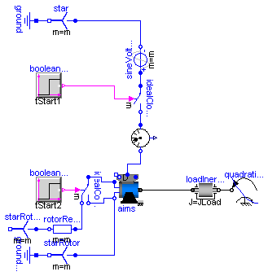
| Type | Name | Default | Description |
|---|---|---|---|
| Voltage | VNominal | 100 | nominal RMS voltage per phase [V] |
| Frequency | fNominal | 50 | nominal frequency [Hz] |
| Time | tStart1 | 0.1 | 1st start time [s] |
| Resistance | Rstart | 0.16 | starting resistance [Ohm] |
| Time | tStart2 | 1.0 | 2nd start time [s] |
| Torque | TLoad | 161.4 | nominal load torque [N.m] |
| AngularVelocity | wLoad | 1440.45*2*Modelica.Constants... | nominal load speed [rad/s] |
| Inertia | JLoad | 0.29 | load's moment of inertia [kg.m2] |
model AIMS_Start
"Test example 3: AsynchronousInductionMachineSlipRing"
extends Modelica.Icons.Example;
constant Integer m=3 "number of phases";
parameter Modelica.SIunits.Voltage VNominal=100
"nominal RMS voltage per phase";
parameter Modelica.SIunits.Frequency fNominal=50 "nominal frequency";
parameter Modelica.SIunits.Time tStart1=0.1 "1st start time";
parameter Modelica.SIunits.Resistance Rstart=0.16 "starting resistance";
parameter Modelica.SIunits.Time tStart2=1.0 "2nd start time";
parameter Modelica.SIunits.Torque TLoad=161.4 "nominal load torque";
parameter Modelica.SIunits.AngularVelocity wLoad(displayUnit="1/min")=1440.45*2*Modelica.Constants.pi/60
"nominal load speed";
parameter Modelica.SIunits.Inertia JLoad=0.29 "load's moment of inertia";
Machines.BasicMachines.AsynchronousInductionMachines.AIM_SlipRing aims;
Machines.Sensors.CurrentQuasiRMSSensor currentQuasiRMSSensor;
Modelica.Electrical.MultiPhase.Sources.SineVoltage sineVoltage(
final m=m,
freqHz=fill(fNominal, m),
V=fill(sqrt(2/3)*VNominal, m));
Modelica.Electrical.MultiPhase.Basic.Star star(final m=m);
Modelica.Electrical.Analog.Basic.Ground ground;
Modelica.Blocks.Sources.BooleanStep booleanStep[m](each startTime=tStart1);
Modelica.Electrical.MultiPhase.Ideal.IdealClosingSwitch idealCloser(
final m=m);
Modelica.Electrical.MultiPhase.Basic.Star starRotor(final m=m);
Modelica.Electrical.Analog.Basic.Ground groundRotor;
Modelica.Electrical.MultiPhase.Ideal.IdealCommutingSwitch
idealCommutingSwitch(m=m);
Modelica.Electrical.MultiPhase.Basic.Resistor rotorResistor(m=m, R=fill(
Rstart, m));
Modelica.Electrical.MultiPhase.Basic.Star starRotorResistor(final m=m);
Modelica.Blocks.Sources.BooleanStep booleanStepRotor[m](each startTime=
tStart2);
Modelica.Mechanics.Rotational.Components.Inertia loadInertia(
J=JLoad);
Modelica.Mechanics.Rotational.Sources.QuadraticSpeedDependentTorque
quadraticLoadTorque(
w_nominal=wLoad,
TorqueDirection=false,
tau_nominal=-TLoad,
useSupport=false);
Machines.Utilities.TerminalBox terminalBox(terminalConnection="D");
equation
connect(star.pin_n, ground.p);
connect(sineVoltage.plug_n, star.plug_p);
connect(sineVoltage.plug_p, idealCloser.plug_p);
connect(starRotor.pin_n, groundRotor.p);
connect(starRotorResistor.plug_p, rotorResistor.plug_n);
connect(rotorResistor.plug_p, idealCommutingSwitch.plug_n1);
connect(aims.plug_rn, starRotor.plug_p);
connect(idealCommutingSwitch.plug_n2, aims.plug_rn);
connect(loadInertia.flange_b, quadraticLoadTorque.flange);
connect(idealCommutingSwitch.plug_p, aims.plug_rp);
connect(booleanStep.y, idealCloser.control);
connect(booleanStepRotor.y, idealCommutingSwitch.control);
connect(idealCloser.plug_n, currentQuasiRMSSensor.plug_p);
connect(terminalBox.plugSupply, currentQuasiRMSSensor.plug_n);
connect(terminalBox.plug_sn, aims.plug_sn);
connect(terminalBox.plug_sp, aims.plug_sp);
connect(aims.flange, loadInertia.flange_a);
end AIMS_Start;
Modelica.Electrical.Machines.Examples.AIMC_Inverter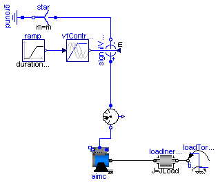
| Type | Name | Default | Description |
|---|---|---|---|
| Voltage | VNominal | 100 | nominal RMS voltage per phase [V] |
| Frequency | fNominal | 50 | nominal frequency [Hz] |
| Frequency | f | 50 | actual frequency [Hz] |
| Time | tRamp | 1 | frequency ramp [s] |
| Torque | TLoad | 161.4 | nominal load torque [N.m] |
| Time | tStep | 1.2 | time of load torque step [s] |
| Inertia | JLoad | 0.29 | load's moment of inertia [kg.m2] |
model AIMC_Inverter
"Test example 4: AsynchronousInductionMachineSquirrelCage with inverter"
extends Modelica.Icons.Example;
constant Integer m=3 "number of phases";
parameter Modelica.SIunits.Voltage VNominal=100
"nominal RMS voltage per phase";
parameter Modelica.SIunits.Frequency fNominal=50 "nominal frequency";
parameter Modelica.SIunits.Frequency f=50 "actual frequency";
parameter Modelica.SIunits.Time tRamp=1 "frequency ramp";
parameter Modelica.SIunits.Torque TLoad=161.4 "nominal load torque";
parameter Modelica.SIunits.Time tStep=1.2 "time of load torque step";
parameter Modelica.SIunits.Inertia JLoad=0.29 "load's moment of inertia";
Machines.BasicMachines.AsynchronousInductionMachines.AIM_SquirrelCage aimc;
Machines.Sensors.CurrentQuasiRMSSensor currentQuasiRMSSensor;
Modelica.Blocks.Sources.Ramp ramp(height=f, duration=tRamp);
Machines.Utilities.VfController vfController(
final m=m,
VNominal=VNominal,
fNominal=fNominal);
Modelica.Electrical.MultiPhase.Sources.SignalVoltage signalVoltage(final m=
m);
Modelica.Electrical.MultiPhase.Basic.Star star(final m=m);
Modelica.Electrical.Analog.Basic.Ground ground;
Modelica.Mechanics.Rotational.Components.Inertia loadInertia(
J=JLoad);
Modelica.Mechanics.Rotational.Sources.TorqueStep loadTorqueStep(
startTime=tStep,
stepTorque=-TLoad,
useSupport=false);
Machines.Utilities.TerminalBox terminalBox;
equation
connect(signalVoltage.plug_n, star.plug_p);
connect(star.pin_n, ground.p);
connect(ramp.y, vfController.u);
connect(vfController.y, signalVoltage.v);
connect(loadTorqueStep.flange, loadInertia.flange_b);
connect(signalVoltage.plug_p, currentQuasiRMSSensor.plug_p);
connect(terminalBox.plugSupply, currentQuasiRMSSensor.plug_n);
connect(terminalBox.plug_sn, aimc.plug_sn);
connect(terminalBox.plug_sp, aimc.plug_sp);
connect(aimc.flange, loadInertia.flange_a);
end AIMC_Inverter;
Modelica.Electrical.Machines.Examples.SMR_Inverter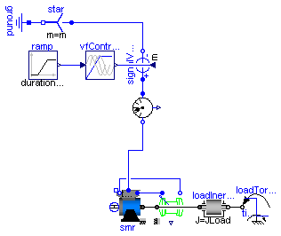
| Type | Name | Default | Description |
|---|---|---|---|
| Voltage | VNominal | 100 | nominal RMS voltage per phase [V] |
| Frequency | fNominal | 50 | nominal frequency [Hz] |
| Frequency | f | 50 | actual frequency [Hz] |
| Time | tRamp | 1 | frequency ramp [s] |
| Torque | TLoad | 46 | nominal load torque [N.m] |
| Time | tStep | 1.2 | time of load torque step [s] |
| Inertia | JLoad | 0.29 | load's moment of inertia [kg.m2] |
model SMR_Inverter
"Test example 5: SynchronousInductionMachineReluctanceRotor with inverter"
extends Modelica.Icons.Example;
constant Integer m=3 "number of phases";
parameter Modelica.SIunits.Voltage VNominal=100
"nominal RMS voltage per phase";
parameter Modelica.SIunits.Frequency fNominal=50 "nominal frequency";
parameter Modelica.SIunits.Frequency f=50 "actual frequency";
parameter Modelica.SIunits.Time tRamp=1 "frequency ramp";
parameter Modelica.SIunits.Torque TLoad=46 "nominal load torque";
parameter Modelica.SIunits.Time tStep=1.2 "time of load torque step";
parameter Modelica.SIunits.Inertia JLoad=0.29 "load's moment of inertia";
Machines.BasicMachines.SynchronousInductionMachines.SM_ReluctanceRotor smr;
Machines.Sensors.CurrentQuasiRMSSensor currentQuasiRMSSensor;
Machines.Sensors.RotorDisplacementAngle rotorDisplacementAngle(p=smr.p);
Modelica.Blocks.Sources.Ramp ramp(height=f, duration=tRamp);
Machines.Utilities.VfController vfController(
final m=m,
VNominal=VNominal,
fNominal=fNominal);
Modelica.Electrical.MultiPhase.Sources.SignalVoltage signalVoltage(final m=
m);
Modelica.Electrical.MultiPhase.Basic.Star star(final m=m);
Modelica.Electrical.Analog.Basic.Ground ground;
Modelica.Mechanics.Rotational.Components.Inertia loadInertia(
J=JLoad);
Modelica.Mechanics.Rotational.Sources.TorqueStep loadTorqueStep(
startTime=tStep,
stepTorque=-TLoad,
useSupport=false);
Machines.Utilities.TerminalBox terminalBox;
equation
connect(signalVoltage.plug_n, star.plug_p);
connect(star.pin_n, ground.p);
connect(ramp.y, vfController.u);
connect(vfController.y, signalVoltage.v);
connect(loadInertia.flange_b, loadTorqueStep.flange);
connect(currentQuasiRMSSensor.plug_p, signalVoltage.plug_p);
connect(smr.plug_sn, rotorDisplacementAngle.plug_n);
connect(smr.plug_sp, rotorDisplacementAngle.plug_p);
connect(terminalBox.plugSupply, currentQuasiRMSSensor.plug_n);
connect(terminalBox.plug_sp, smr.plug_sp);
connect(terminalBox.plug_sn, smr.plug_sn);
connect(smr.flange, rotorDisplacementAngle.flange);
connect(smr.flange, loadInertia.flange_a);
end SMR_Inverter;
Modelica.Electrical.Machines.Examples.SMPM_Inverter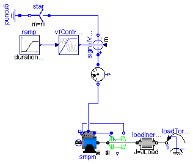
In practice it is nearly impossible to drive a PMSMD without current controller.
| Type | Name | Default | Description |
|---|---|---|---|
| Voltage | VNominal | 100 | nominal RMS voltage per phase [V] |
| Frequency | fNominal | 50 | nominal frequency [Hz] |
| Frequency | f | 50 | actual frequency [Hz] |
| Time | tRamp | 1 | frequency ramp [s] |
| Torque | TLoad | 181.4 | nominal load torque [N.m] |
| Time | tStep | 1.2 | time of load torque step [s] |
| Inertia | JLoad | 0.29 | load's moment of inertia [kg.m2] |
model SMPM_Inverter
"Test example 6: PermanentMagnetSynchronousInductionMachine with inverter"
extends Modelica.Icons.Example;
constant Integer m=3 "number of phases";
parameter Modelica.SIunits.Voltage VNominal=100
"nominal RMS voltage per phase";
parameter Modelica.SIunits.Frequency fNominal=50 "nominal frequency";
parameter Modelica.SIunits.Frequency f=50 "actual frequency";
parameter Modelica.SIunits.Time tRamp=1 "frequency ramp";
parameter Modelica.SIunits.Torque TLoad=181.4 "nominal load torque";
parameter Modelica.SIunits.Time tStep=1.2 "time of load torque step";
parameter Modelica.SIunits.Inertia JLoad=0.29 "load's moment of inertia";
Machines.BasicMachines.SynchronousInductionMachines.SM_PermanentMagnet smpm;
Machines.Sensors.CurrentQuasiRMSSensor currentQuasiRMSSensor;
Machines.Sensors.RotorDisplacementAngle rotorDisplacementAngle(p=smpm.p);
Modelica.Blocks.Sources.Ramp ramp(height=f, duration=tRamp);
Machines.Utilities.VfController vfController(
final m=m,
VNominal=VNominal,
fNominal=fNominal,
BasePhase=+Modelica.Constants.pi/2);
Modelica.Electrical.MultiPhase.Sources.SignalVoltage signalVoltage(final m=
m);
Modelica.Electrical.MultiPhase.Basic.Star star(final m=m);
Modelica.Electrical.Analog.Basic.Ground ground;
Modelica.Mechanics.Rotational.Components.Inertia loadInertia(
J=JLoad);
Modelica.Mechanics.Rotational.Sources.TorqueStep loadTorqueStep(
startTime=tStep,
stepTorque=-TLoad,
useSupport=false);
Machines.Utilities.TerminalBox terminalBox;
equation
connect(signalVoltage.plug_n, star.plug_p);
connect(star.pin_n, ground.p);
connect(ramp.y, vfController.u);
connect(vfController.y, signalVoltage.v);
connect(loadInertia.flange_b, loadTorqueStep.flange);
connect(signalVoltage.plug_p, currentQuasiRMSSensor.plug_p);
connect(rotorDisplacementAngle.plug_n, smpm.plug_sn);
connect(rotorDisplacementAngle.plug_p, smpm.plug_sp);
connect(terminalBox.plugSupply, currentQuasiRMSSensor.plug_n);
connect(terminalBox.plug_sn, smpm.plug_sn);
connect(terminalBox.plug_sp, smpm.plug_sp);
connect(smpm.flange, rotorDisplacementAngle.flange);
connect(smpm.flange, loadInertia.flange_a);
end SMPM_Inverter;
Modelica.Electrical.Machines.Examples.SMEE_Generator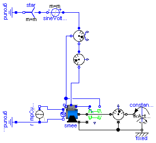
| Type | Name | Default | Description |
|---|---|---|---|
| Voltage | VNominal | 100 | nominal RMS voltage per phase [V] |
| Frequency | fNominal | 50 | nominal frequency [Hz] |
| AngularVelocity | wActual | 1499*2*Modelica.Constants.pi... | actual speed [rad/s] |
| Current | Ie | 19 | excitation current [A] |
| Current | Ie0 | 10 | initial excitation current [A] |
| Angle | gamma0 | 0 | initial rotor displacement angle [rad] |
model SMEE_Generator
"Test example 7: ElectricalExcitedSynchronousInductionMachine as Generator"
extends Modelica.Icons.Example;
constant Integer m=3 "number of phases";
parameter Modelica.SIunits.Voltage VNominal=100
"nominal RMS voltage per phase";
parameter Modelica.SIunits.Frequency fNominal=50 "nominal frequency";
parameter Modelica.SIunits.AngularVelocity wActual(displayUnit="1/min")=1499*2*Modelica.Constants.pi/60
"actual speed";
parameter Modelica.SIunits.Current Ie = 19 "excitation current";
parameter Modelica.SIunits.Current Ie0 = 10 "initial excitation current";
parameter Modelica.SIunits.Angle gamma0(displayUnit="deg")=0
"initial rotor displacement angle";
Machines.BasicMachines.SynchronousInductionMachines.SM_ElectricalExcited smee(
useSupport=true, phiMechanical(start=-(Modelica.Constants.pi +gamma0)/smee.p, fixed=true));
Machines.Sensors.RotorDisplacementAngle rotorDisplacementAngle(p=smee.p,
useSupport=true);
Modelica.Electrical.Analog.Basic.Ground groundExcitation;
Modelica.Mechanics.Rotational.Sources.ConstantSpeed constantSpeed(
final w_fixed=wActual);
Sensors.MechanicalPowerSensor mechanicalPowerSensor(useSupport=true);
Sensors.ElectricalPowerSensor electricalPowerSensor;
Machines.Sensors.CurrentQuasiRMSSensor currentQuasiRMSSensor;
Modelica.Electrical.MultiPhase.Sources.SineVoltage sineVoltage(
final m=m,
final V=fill(VNominal*sqrt(2), m),
final freqHz=fill(fNominal, m));
Modelica.Electrical.MultiPhase.Basic.Star star(final m=m);
Modelica.Electrical.Analog.Basic.Ground ground;
Modelica.Electrical.Analog.Sources.RampCurrent rampCurrent(
duration=0.1,
I=Ie - Ie0,
offset=Ie0);
Machines.Utilities.TerminalBox terminalBox;
Modelica.Mechanics.Rotational.Components.Fixed fixed;
equation
connect(rotorDisplacementAngle.plug_n, smee.plug_sn);
connect(rotorDisplacementAngle.plug_p, smee.plug_sp);
connect(star.pin_n, ground.p);
connect(star.plug_p, sineVoltage.plug_n);
connect(electricalPowerSensor.plug_ni, currentQuasiRMSSensor.plug_p);
connect(mechanicalPowerSensor.flange_b, constantSpeed.flange);
connect(sineVoltage.plug_p, electricalPowerSensor.plug_p);
connect(rampCurrent.p, groundExcitation.p);
connect(rampCurrent.p, smee.pin_en);
connect(rampCurrent.n, smee.pin_ep);
connect(electricalPowerSensor.plug_nv, smee.plug_sn);
connect(terminalBox.plugSupply, currentQuasiRMSSensor.plug_n);
connect(terminalBox.plug_sn, smee.plug_sn);
connect(terminalBox.plug_sp, smee.plug_sp);
connect(constantSpeed.support, fixed.flange);
connect(mechanicalPowerSensor.support, fixed.flange);
connect(smee.support, fixed.flange);
connect(rotorDisplacementAngle.support, smee.support);
connect(smee.flange, rotorDisplacementAngle.flange);
connect(smee.flange, mechanicalPowerSensor.flange_a);
end SMEE_Generator;
Modelica.Electrical.Machines.Examples.DCPM_Start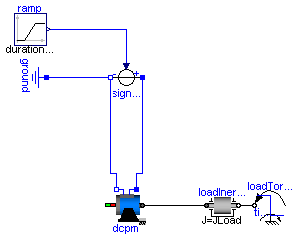
| Type | Name | Default | Description |
|---|---|---|---|
| Voltage | Va | 100 | actual armature voltage [V] |
| Time | tStart | 0.2 | armature voltage ramp [s] |
| Time | tRamp | 0.8 | armature voltage ramp [s] |
| Torque | TLoad | 63.66 | nominal load torque [N.m] |
| Time | tStep | 1.5 | time of load torque step [s] |
| Inertia | JLoad | 0.15 | load's moment of inertia [kg.m2] |
model DCPM_Start
"Test example 8: DC with permanent magnet starting with voltage ramp"
extends Modelica.Icons.Example;
parameter Modelica.SIunits.Voltage Va=100 "actual armature voltage";
parameter Modelica.SIunits.Time tStart=0.2 "armature voltage ramp";
parameter Modelica.SIunits.Time tRamp=0.8 "armature voltage ramp";
parameter Modelica.SIunits.Torque TLoad=63.66 "nominal load torque";
parameter Modelica.SIunits.Time tStep=1.5 "time of load torque step";
parameter Modelica.SIunits.Inertia JLoad=0.15 "load's moment of inertia";
Machines.BasicMachines.DCMachines.DC_PermanentMagnet dcpm;
Modelica.Blocks.Sources.Ramp ramp(
duration=tRamp,
height=Va,
startTime=tStart);
Modelica.Electrical.Analog.Sources.SignalVoltage signalVoltage;
Modelica.Electrical.Analog.Basic.Ground ground;
Modelica.Mechanics.Rotational.Components.Inertia loadInertia(
J=JLoad);
Modelica.Mechanics.Rotational.Sources.TorqueStep loadTorqueStep(
startTime=tStep,
stepTorque=-TLoad,
useSupport=false);
equation
connect(ramp.y, signalVoltage.v);
connect(signalVoltage.p, dcpm.pin_ap);
connect(signalVoltage.n, ground.p);
connect(dcpm.pin_an, signalVoltage.n);
connect(loadInertia.flange_b, loadTorqueStep.flange);
connect(dcpm.flange, loadInertia.flange_a);
end DCPM_Start;
Modelica.Electrical.Machines.Examples.DCEE_Start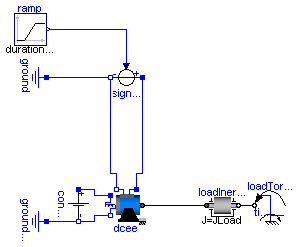
| Type | Name | Default | Description |
|---|---|---|---|
| Voltage | Va | 100 | actual armature voltage [V] |
| Time | tStart | 0.2 | armature voltage ramp [s] |
| Time | tRamp | 0.8 | armature voltage ramp [s] |
| Voltage | Ve | 100 | actual excitation voltage [V] |
| Torque | TLoad | 63.66 | nominal load torque [N.m] |
| Time | tStep | 1.5 | time of load torque step [s] |
| Inertia | JLoad | 0.15 | load's moment of inertia [kg.m2] |
model DCEE_Start
"Test example 9: DC with electrical ecxitation starting with voltage ramp"
extends Modelica.Icons.Example;
parameter Modelica.SIunits.Voltage Va=100 "actual armature voltage";
parameter Modelica.SIunits.Time tStart=0.2 "armature voltage ramp";
parameter Modelica.SIunits.Time tRamp=0.8 "armature voltage ramp";
parameter Modelica.SIunits.Voltage Ve=100 "actual excitation voltage";
parameter Modelica.SIunits.Torque TLoad=63.66 "nominal load torque";
parameter Modelica.SIunits.Time tStep=1.5 "time of load torque step";
parameter Modelica.SIunits.Inertia JLoad=0.15 "load's moment of inertia";
Machines.BasicMachines.DCMachines.DC_ElectricalExcited dcee;
Modelica.Blocks.Sources.Ramp ramp(
duration=tRamp,
height=Va,
startTime=tStart);
Modelica.Electrical.Analog.Sources.SignalVoltage signalVoltage;
Modelica.Electrical.Analog.Basic.Ground ground;
Modelica.Electrical.Analog.Sources.ConstantVoltage constantVoltage(V=Ve);
Modelica.Electrical.Analog.Basic.Ground groundExcitation;
Modelica.Mechanics.Rotational.Components.Inertia loadInertia(
J=JLoad);
Modelica.Mechanics.Rotational.Sources.TorqueStep loadTorqueStep(
startTime=tStep,
stepTorque=-TLoad,
useSupport=false);
equation
connect(ramp.y, signalVoltage.v);
connect(signalVoltage.p, dcee.pin_ap);
connect(signalVoltage.n, ground.p);
connect(dcee.pin_an, ground.p);
connect(constantVoltage.n, groundExcitation.p);
connect(dcee.pin_ep, constantVoltage.p);
connect(dcee.pin_en, constantVoltage.n);
connect(loadInertia.flange_b, loadTorqueStep.flange);
connect(dcee.flange, loadInertia.flange_a);
end DCEE_Start;
Modelica.Electrical.Machines.Examples.DCSE_Start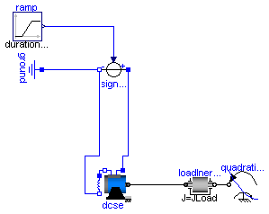
| Type | Name | Default | Description |
|---|---|---|---|
| Voltage | Va | 100 | actual armature voltage [V] |
| Time | tStart | 0.2 | armature voltage ramp [s] |
| Time | tRamp | 0.8 | armature voltage ramp [s] |
| Torque | TLoad | 63.66 | nominal load torque [N.m] |
| AngularVelocity | wLoad | 1410*2*Modelica.Constants.pi... | nominal load speed [rad/s] |
| Inertia | JLoad | 0.15 | load's moment of inertia [kg.m2] |
model DCSE_Start
"Test example 10: DC with serial excitation starting with voltage ramp"
extends Modelica.Icons.Example;
parameter Modelica.SIunits.Voltage Va=100 "actual armature voltage";
parameter Modelica.SIunits.Time tStart=0.2 "armature voltage ramp";
parameter Modelica.SIunits.Time tRamp=0.8 "armature voltage ramp";
parameter Modelica.SIunits.Torque TLoad=63.66 "nominal load torque";
parameter Modelica.SIunits.AngularVelocity wLoad(displayUnit="1/min")=1410*2*Modelica.Constants.pi/60
"nominal load speed";
parameter Modelica.SIunits.Inertia JLoad=0.15 "load's moment of inertia";
Machines.BasicMachines.DCMachines.DC_SeriesExcited dcse;
Modelica.Blocks.Sources.Ramp ramp(
duration=tRamp,
height=Va,
startTime=tStart);
Modelica.Electrical.Analog.Sources.SignalVoltage signalVoltage;
Modelica.Electrical.Analog.Basic.Ground ground;
Modelica.Mechanics.Rotational.Components.Inertia loadInertia(
J=JLoad);
Modelica.Mechanics.Rotational.Sources.QuadraticSpeedDependentTorque
quadraticLoadTorque(
w_nominal=wLoad,
TorqueDirection=false,
tau_nominal=-TLoad,
useSupport=false);
equation
connect(ramp.y, signalVoltage.v);
connect(signalVoltage.p, dcse.pin_ap);
connect(signalVoltage.n, ground.p);
connect(loadInertia.flange_b, quadraticLoadTorque.flange);
connect(dcse.pin_an, dcse.pin_ep);
connect(dcse.pin_en, signalVoltage.n);
connect(dcse.flange, loadInertia.flange_a);
end DCSE_Start;
Modelica.Electrical.Machines.Examples.TransformerTestbench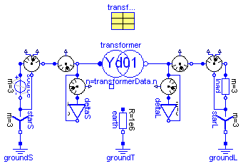
| Type | Name | Default | Description |
|---|---|---|---|
| Resistance | RL[3] | fill(1/3, 3) | Load resistance [Ohm] |
model TransformerTestbench "Transformer Testbench"
extends Modelica.Icons.Example;
parameter Modelica.SIunits.Resistance RL[3]=fill(1/3,3) "Load resistance";
Modelica.Electrical.MultiPhase.Sources.SineVoltage source(freqHz=fill(50, 3),
V=fill(sqrt(2/3)*100, 3));
Modelica.Electrical.MultiPhase.Basic.Star starS;
Modelica.Electrical.Analog.Basic.Ground groundS;
Sensors.ElectricalPowerSensor electricalPowerSensorS;
Machines.Sensors.CurrentQuasiRMSSensor currentQuasiRMSSensorS;
Machines.Sensors.VoltageQuasiRMSSensor voltageQuasiRMSSensorS;
Modelica.Electrical.MultiPhase.Basic.Delta deltaS;
Modelica.Electrical.Analog.Basic.Resistor earth(R=1e6);
Modelica.Electrical.Analog.Basic.Ground groundT;
Machines.Sensors.VoltageQuasiRMSSensor voltageRMSSensorL;
Modelica.Electrical.MultiPhase.Basic.Delta deltaL;
Machines.Sensors.CurrentQuasiRMSSensor currentQuasiRMSSensorL;
Sensors.ElectricalPowerSensor electricalPowerSensorL;
Modelica.Electrical.MultiPhase.Basic.Resistor load(R=RL);
Modelica.Electrical.MultiPhase.Basic.Star starL;
Modelica.Electrical.Analog.Basic.Ground groundL;
Machines.Utilities.TransformerData transformerData(
C1=Modelica.Utilities.Strings.substring(transformer.VectorGroup,1,1),
C2=Modelica.Utilities.Strings.substring(transformer.VectorGroup,2,2));
BasicMachines.Transformers.Yd.Yd01 transformer(
n=transformerData.n,
R1=transformerData.R1,
L1sigma=transformerData.L1sigma,
R2=transformerData.R2,
L2sigma=transformerData.L2sigma);
equation
connect(starS.pin_n, groundS.p);
connect(source.plug_n, starS.plug_p);
connect(starL.pin_n, groundL.p);
connect(load.plug_n, starL.plug_p);
connect(earth.n, groundT.p);
connect(electricalPowerSensorS.plug_nv, starS.plug_p);
connect(source.plug_p, electricalPowerSensorS.plug_p);
connect(electricalPowerSensorS.plug_ni, currentQuasiRMSSensorS.plug_p);
connect(currentQuasiRMSSensorL.plug_n, electricalPowerSensorL.plug_p);
connect(electricalPowerSensorL.plug_ni, load.plug_p);
connect(currentQuasiRMSSensorS.plug_n, voltageQuasiRMSSensorS.plug_p);
connect(currentQuasiRMSSensorL.plug_p, voltageRMSSensorL.plug_p);
connect(electricalPowerSensorL.plug_nv, starL.plug_p);
connect(voltageQuasiRMSSensorS.plug_n, deltaS.plug_p);
connect(deltaL.plug_p, voltageRMSSensorL.plug_n);
connect(deltaS.plug_n, voltageQuasiRMSSensorS.plug_p);
connect(deltaL.plug_n, voltageRMSSensorL.plug_p);
connect(currentQuasiRMSSensorS.plug_n, transformer.plug1);
connect(transformer.plug2, currentQuasiRMSSensorL.plug_p);
end TransformerTestbench;
Modelica.Electrical.Machines.Examples.Rectifier6pulse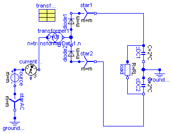
| Type | Name | Default | Description |
|---|---|---|---|
| Voltage | V | 100*sqrt(2/3) | Amplitude of star-voltage [V] |
| Frequency | f | 50 | Frequency [Hz] |
| Resistance | RL | 0.4 | Load resistance [Ohm] |
| Capacitance | C | 0.005 | Total DC-capacitance [F] |
| Voltage | VC0 | sqrt(3)*V | Initial voltage of capacitance [V] |
model Rectifier6pulse "6-pulse rectifier with 1 transformer"
extends Modelica.Icons.Example;
constant Integer m=3 "Number of phases";
parameter Modelica.SIunits.Voltage V=100*sqrt(2/3)
"Amplitude of star-voltage";
parameter Modelica.SIunits.Frequency f=50 "Frequency";
parameter Modelica.SIunits.Resistance RL=0.4 "Load resistance";
parameter Modelica.SIunits.Capacitance C=0.005 "Total DC-capacitance";
parameter Modelica.SIunits.Voltage VC0=sqrt(3)*V
"Initial voltage of capacitance";
Modelica.Electrical.MultiPhase.Sources.SineVoltage source(
m=m,
V=fill(V, m),
freqHz=fill(f, m));
Modelica.Electrical.MultiPhase.Basic.Star starAC(m=m);
Modelica.Electrical.Analog.Basic.Ground groundAC;
Modelica.Electrical.MultiPhase.Sensors.CurrentSensor currentQuasiRMSSensor;
Modelica.Electrical.MultiPhase.Ideal.IdealDiode diode1(m=m);
Modelica.Electrical.MultiPhase.Basic.Star star1(m=m);
Modelica.Electrical.MultiPhase.Ideal.IdealDiode diode2(m=m);
Modelica.Electrical.MultiPhase.Basic.Star star2(m=m);
Modelica.Electrical.Analog.Basic.Resistor load(R=RL);
Modelica.Electrical.Analog.Basic.Capacitor cDC1(C=2*C, v(start=VC0/2));
Modelica.Electrical.Analog.Basic.Capacitor cDC2(C=2*C, v(start=VC0/2));
Modelica.Electrical.Analog.Basic.Ground groundDC;
Machines.Utilities.TransformerData transformerData1(
C1=Modelica.Utilities.Strings.substring(transformer1.VectorGroup,1,1),
C2=Modelica.Utilities.Strings.substring(transformer1.VectorGroup,2,2));
BasicMachines.Transformers.Dy.Dy01 transformer1(
n=transformerData1.n,
R1=transformerData1.R1,
L1sigma=transformerData1.L1sigma,
R2=transformerData1.R2,
L2sigma=transformerData1.L2sigma);
equation
connect(cDC1.n, cDC2.p);
connect(cDC1.n, groundDC.p);
connect(starAC.plug_p, source.plug_n);
connect(diode1.plug_n, star1.plug_p);
connect(diode2.plug_p, star2.plug_p);
connect(diode2.plug_n, diode1.plug_p);
connect(starAC.pin_n, groundAC.p);
connect(source.plug_p, currentQuasiRMSSensor.plug_p);
connect(load.p, cDC1.p);
connect(load.n, cDC2.n);
connect(star1.pin_n, cDC1.p);
connect(star2.pin_n, cDC2.n);
connect(transformer1.plug1, currentQuasiRMSSensor.plug_n);
connect(transformer1.plug2, diode1.plug_p);
end Rectifier6pulse;
Modelica.Electrical.Machines.Examples.Rectifier12pulse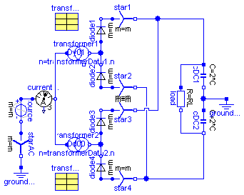
| Type | Name | Default | Description |
|---|---|---|---|
| Voltage | V | 100*sqrt(2/3) | Amplitude of star-voltage [V] |
| Frequency | f | 50 | Frequency [Hz] |
| Resistance | RL | 0.2 | Load resistance [Ohm] |
| Capacitance | C | 0.005 | Total DC-capacitance [F] |
| Voltage | VC0 | sqrt(3)*V | Initial voltage of capacitance [V] |
model Rectifier12pulse "12-pulse rectifier with 2 transformers"
extends Modelica.Icons.Example;
extends Machines.Examples.Rectifier6pulse(RL=0.2);
Modelica.Electrical.MultiPhase.Ideal.IdealDiode diode3(m=m);
Modelica.Electrical.MultiPhase.Basic.Star star3(m=m);
Modelica.Electrical.MultiPhase.Ideal.IdealDiode diode4(m=m);
Modelica.Electrical.MultiPhase.Basic.Star star4(m=m);
BasicMachines.Transformers.Dd.Dd00 transformer2(
n=transformerData2.n,
R1=transformerData2.R1,
L1sigma=transformerData2.L1sigma,
R2=transformerData2.R2,
L2sigma=transformerData2.L2sigma);
Machines.Utilities.TransformerData transformerData2(
C1=Modelica.Utilities.Strings.substring(transformer2.VectorGroup,1,1),
C2=Modelica.Utilities.Strings.substring(transformer2.VectorGroup,2,2));
equation
connect(diode3.plug_n, star3.plug_p);
connect(diode4.plug_p, star4.plug_p);
connect(diode4.plug_n, diode3.plug_p);
connect(star4.pin_n, cDC2.n);
connect(star3.pin_n, cDC1.p);
connect(transformer2.plug2, diode4.plug_n);
connect(transformer2.plug1, currentQuasiRMSSensor.plug_n);
end Rectifier12pulse;
Modelica.Electrical.Machines.Examples.AIMC_Steinmetz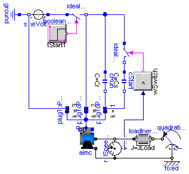
| Type | Name | Default | Description |
|---|---|---|---|
| Voltage | VNominal | 100 | nominal RMS voltage per phase [V] |
| Frequency | fNominal | 50 | nominal frequency [Hz] |
| Time | tStart1 | 0.1 | start time [s] |
| Capacitance | Cr | 0.0035 | motor's running capacitor [F] |
| Capacitance | Cs | 5*Cr | motor's (additional) starting capacitor [F] |
| AngularVelocity | wSwitch | 1350*2*Modelica.Constants.pi... | speed for switching off the starting capacitor [rad/s] |
| Torque | TLoad | 2/3*161.4 | nominal load torque [N.m] |
| AngularVelocity | wLoad | 1462.5*2*Modelica.Constants.... | nominal load speed [rad/s] |
| Inertia | JLoad | 0.29 | load's moment of inertia [kg.m2] |
model AIMC_Steinmetz
"AsynchronousInductionMachineSquirrelCage Steinmetz-connection"
extends Modelica.Icons.Example;
constant Integer m=3 "number of phases";
parameter Modelica.SIunits.Voltage VNominal=100
"nominal RMS voltage per phase";
parameter Modelica.SIunits.Frequency fNominal=50 "nominal frequency";
parameter Modelica.SIunits.Time tStart1=0.1 "start time";
parameter Modelica.SIunits.Capacitance Cr=0.0035 "motor's running capacitor";
parameter Modelica.SIunits.Capacitance Cs=5*Cr
"motor's (additional) starting capacitor";
parameter Modelica.SIunits.AngularVelocity wSwitch(displayUnit="1/min")=1350*2*Modelica.Constants.pi/60
"speed for switching off the starting capacitor";
parameter Modelica.SIunits.Torque TLoad=2/3*161.4 "nominal load torque";
parameter Modelica.SIunits.AngularVelocity wLoad(displayUnit="1/min")=1462.5*2*Modelica.Constants.pi/60
"nominal load speed";
parameter Modelica.SIunits.Inertia JLoad=0.29 "load's moment of inertia";
Machines.BasicMachines.AsynchronousInductionMachines.AIM_SquirrelCage aimc(
useSupport=true);
Modelica.Electrical.Analog.Sources.SineVoltage sineVoltage(freqHz=
fNominal, V=sqrt(2)*VNominal);
Modelica.Electrical.Analog.Basic.Ground ground;
Modelica.Blocks.Sources.BooleanStep booleanStep(startTime=tStart1);
Modelica.Electrical.Analog.Ideal.IdealClosingSwitch idealCloser;
Modelica.Mechanics.Rotational.Components.Inertia loadInertia(
J=JLoad);
Modelica.Mechanics.Rotational.Sources.QuadraticSpeedDependentTorque
quadraticLoadTorque(
w_nominal=wLoad,
TorqueDirection=false,
tau_nominal=-TLoad);
Machines.Utilities.TerminalBox TerminalBox1(
terminalConnection="D");
Modelica.Electrical.MultiPhase.Basic.PlugToPin_p plugToPin_p3(m=m, k=3);
Modelica.Electrical.MultiPhase.Basic.PlugToPin_p plugToPin_p2(m=m, k=2);
Modelica.Electrical.MultiPhase.Basic.PlugToPin_p plugToPin_p1(m=m, k=1);
Modelica.Electrical.Analog.Basic.Capacitor cRun(C=Cr);
Modelica.Electrical.Analog.Basic.Capacitor cStart(C=Cs);
Modelica.Electrical.Analog.Ideal.IdealOpeningSwitch idealOpener;
Modelica.Blocks.Logical.GreaterThreshold greaterThreshold(threshold=
wSwitch);
Modelica.Mechanics.Rotational.Components.Fixed fixed;
Modelica.Mechanics.Rotational.Sensors.RelSpeedSensor relSpeedSensor;
equation
connect(ground.p, sineVoltage.n);
connect(sineVoltage.p, idealCloser.p);
connect(booleanStep.y, idealCloser.control);
connect(plugToPin_p3.pin_p, sineVoltage.n);
connect(idealCloser.n, plugToPin_p2.pin_p);
connect(cRun.n, plugToPin_p1.pin_p);
connect(loadInertia.flange_b, quadraticLoadTorque.flange);
connect(cRun.p, idealCloser.n);
connect(plugToPin_p1.pin_p,cStart. n);
connect(idealOpener.n, cStart.p);
connect(idealOpener.p, idealCloser.n);
connect(greaterThreshold.y, idealOpener.control);
connect(TerminalBox1.plug_sn, aimc.plug_sn);
connect(TerminalBox1.plug_sp, aimc.plug_sp);
connect(TerminalBox1.plugSupply, plugToPin_p2.plug_p);
connect(TerminalBox1.plugSupply, plugToPin_p3.plug_p);
connect(TerminalBox1.plugSupply, plugToPin_p1.plug_p);
connect(quadraticLoadTorque.support, fixed.flange);
connect(relSpeedSensor.flange_a, fixed.flange);
connect(relSpeedSensor.w_rel, greaterThreshold.u);
connect(aimc.support, fixed.flange);
connect(aimc.flange, relSpeedSensor.flange_b);
connect(aimc.flange, loadInertia.flange_a);
end AIMC_Steinmetz;